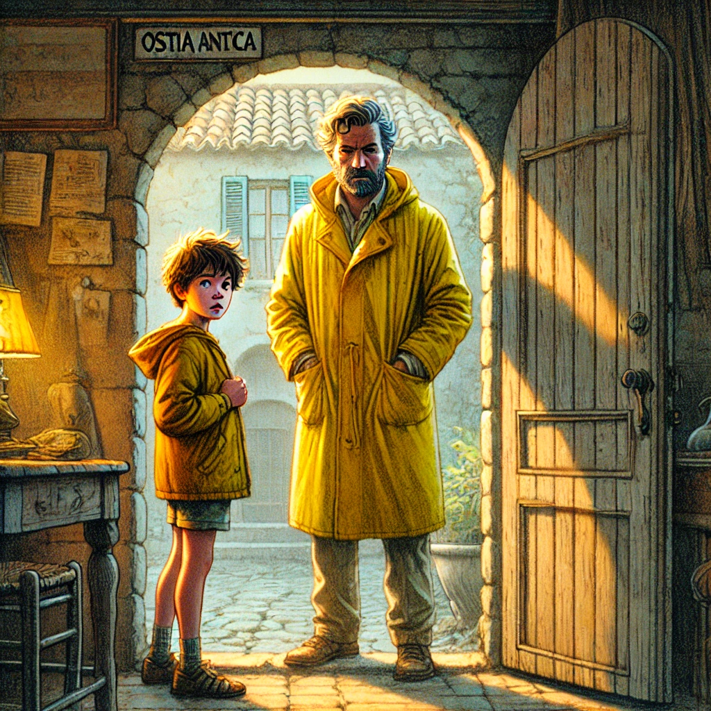

15. Dezember
Giorgio
Als Johann und Maggy nach Hause kamen, wollte Johann sofort mit Hans sprechen. Sein Herz pochte, während er die Gedanken an Giorgio und die Verfolger ordnete. Hans saß im Esszimmer über einem Haufen Notizen, Karten und einer alten, abgenutzten Karte von Rom und seiner Umgebung. Johann wartete ungeduldig, während Hans in die Unterlagen vertieft blieb. „Warte kurz, Johann“, murmelte er. „Ich bin gleich so weit.“
Doch kaum schien Hans bereit, ihm zuzuhören, klingelte es an der Tür. Hans seufzte genervt, stand auf und öffnete. Draußen stand Giorgio, immer noch in seiner auffälligen gelben Regenjacke. „Ich konnte die Verfolger abschütteln und auf eine falsche Spur bringen“, sagte er atemlos.
Hans entspannte sich sichtbar. „Gut, dass du da bist, Giorgio! Ich wollte dich schon längst anrufen. Ich brauche dringend Hilfe. Ich kann nicht allein über Johann wachen und alles organisieren.“ Doch plötzlich wurde sein Blick skeptisch. „Aber … wie hast du uns überhaupt gefunden?“
„Carlos hat mir Bescheid gegeben“, antwortete Giorgio beiläufig. Hans schien für einen Moment verwirrt, doch dann richtete er seine Aufmerksamkeit wieder auf Johann. „Giorgio, könntest du bitte etwas Zeit mit Johann verbringen? Er hat viele Fragen, und ich muss mich um ein paar Dinge kümmern.“
Johann war schockiert. Er hatte Hans warnen wollen – über Giorgio! Jetzt sollte er mit ihm reden?
Giorgio wandte sich an Johann. „Was willst du wissen?“ Johann stammelte, bis er schließlich seine Gedanken sortierte. „Lass uns ins Wohnzimmer gehen. Dann kann Hans in Ruhe arbeiten.“
Im Wohnzimmer setzte sich Giorgio bequem auf das alte Sofa. Johann blieb stehen, zögernd, dann fasste er sich ein Herz. „Wer sind die Verfolger?“
Giorgio schien überrascht, rieb sich kurz die Stirn und sprach dann knapp: „Ich weiß es nicht genau. Sie sollen aus Griechenland kommen. Mehr weiß ich nicht.“ Seine Stimme klang ungewohnt unsicher, und er wich Johann aus, während er sprach.
„Schreib mir bitte alles auf, was du weißt“, forderte Johann. „Ich muss kurz aufs Klo.“
Giorgio nickte langsam, und Johann lief hastig zu Hans, der immer noch im Esszimmer saß. „Hans! Ich muss dir was sagen. Ich glaube, Giorgio ist ein Verräter!“
Hans sah auf, überrascht. „Unsinn!" Und nach kurzer Pause: "Hast du Beweise?“
„Nein“, sagte Johann zögerlich. „Nur ein Gefühl.“
Hans schüttelte den Kopf. „Unsinn, Johann. Du hast eine blühende Fantasie. Giorgio sieht vielleicht aus wie ein Gangster, aber er ist ein feiner Typ.“
Maggy, die in der Nähe zugehört hatte, trat hinzu. „Hans, hör auf Johann. Er hat besondere Fähigkeiten. Diese Eingebung kam, nachdem er versucht hat, sich zu konzentrieren und Kontakt zur anderen Welt aufzunehmen.“
Hans hielt inne. Seine Stirn legte sich in Falten, und er wirkte nachdenklich. „Es ist … seltsam“, murmelte er schließlich. „Dass Carlos Giorgio die Adresse gegeben haben soll …“
Er stand auf. „Johann, du musst Carlos anrufen. Aber nicht von hier. Geh ins Dorf, dort gibt es ein öffentliches Telefon. Maggy, geh mit ihm. Ich werde mir etwas einfallen lassen, um Giorgio hier zu halten.“
Johann grinste plötzlich. „Sag ihm, wir sind auf Besichtigungstour in Ostia“, meinte er und dachte an die Touristin, die jetzt sein altes Handy in ihrer Tasche hatte. „Die können so viel tracken, wie sie wollen!“ Ums Handy war es jedenfalls nicht Schade gewesen. Das war uralt, noch ganz ohne Touchscreen, und stattdessen mit Nummerntasten, auf denen damals sogar Buchstaben standen.
Hans schob die beiden zur Tür. „Lauft schnell zum ‚Café di Flavio‘!“ rief er ihnen nach.
„Aber … was ist Carlos’ Nummer?“ fragte Johann plötzlich.
Hans hielt inne und runzelte die Stirn. „Die musst du doch haben. Carlos hat sie dir geschickt, soweit ich weiß, aufs Handy.“
Die Tür fiel hinter ihnen ins Schloss. Johann wurde blass.
Was soll Johann tun?
Welche Nummer sollte er anrufen? Und wo wohnte Carlos überhaupt?